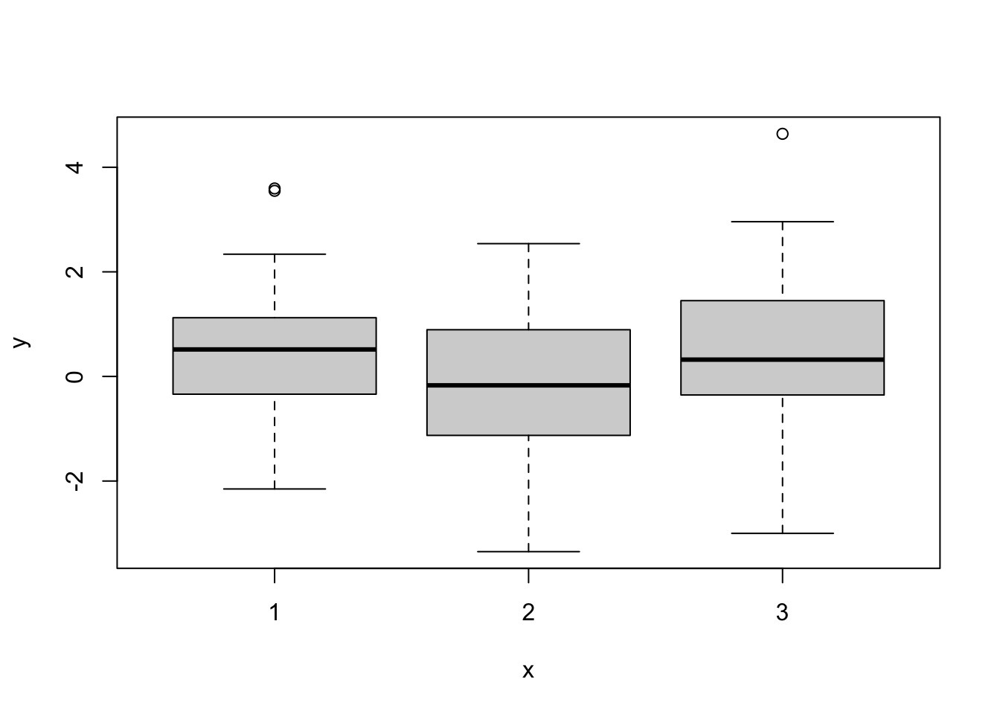
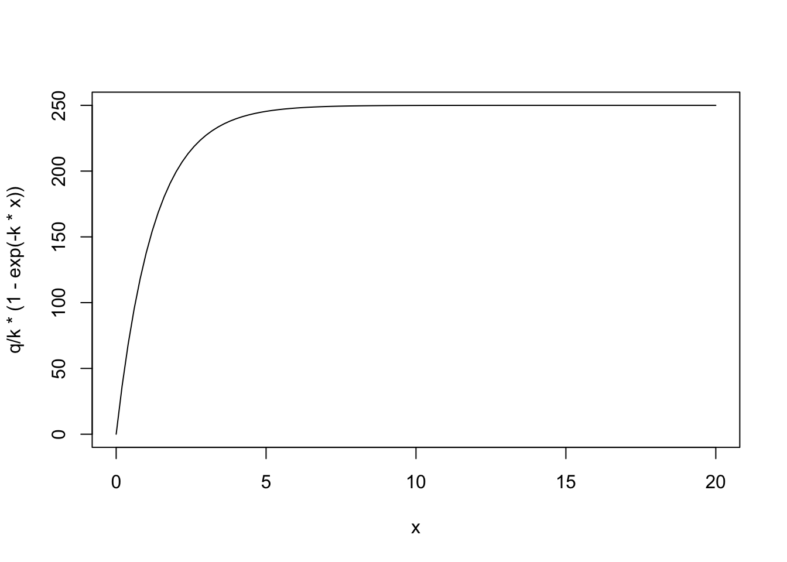

library(targets)
library(ggplot2)
library(tidyverse)
library(tidybayes)
library(cmdstanr)How many groups do you need for a random effect?
let’s prepare a data simulation where we are looking at just a few groups. We’ll assume we’re working with a classic ANOVA:
\[ \begin{align} \text{measurement}_i &\sim \text{normal}(\mu_{\text{treatment}[i]}, \sigma) \\ \mu_{\text{treatment}} &\sim \text{normal}(\mu_{\text{overall}}, \sigma_{\text{treatment}}) \\ \mu_{\text{overall}} &\sim \text{normal}(14, 1) \\ \sigma_{\text{treatment}} &\sim \text{exponential}(1) \\ \sigma_{\text{treatment}} &\sim \text{exponential}(1) \\ \end{align} \]
test the model
test_ngroup <- 3
test_sgroup <- 1.3
test_groupmeans <- rnorm(n = test_ngroup, mean = 0, sd = .01)
test_groupIDs <- rep(1:test_ngroup, each = 42)
meas <- rnorm(n = length(test_groupIDs),
mean = test_groupmeans[test_groupIDs],
sd = 1.5)
plot(as.factor(test_groupIDs), meas)
look at the model
hier_intercept <- cmdstan_model(here::here("posts/2023-04-26-how-many-groups-is-enough/hier_intercept.stan"))
hier_interceptdata {
int N;
int Ngroup;
vector[N] measurements;
array[N] int<lower=0,upper=Ngroup> group_id;
}
parameters {
real<lower=0> sigma_group;
real<lower=0> sigma_obs;
real grand_mean;
vector[Ngroup] z;
}
transformed parameters {
vector[Ngroup] mean_group;
mean_group = grand_mean + z*sigma_group;
}
model {
measurements ~ normal(mean_group[group_id], sigma_obs);
z ~ std_normal();
sigma_obs ~ exponential(1);
sigma_group ~ exponential(10);
}fit it to this sample:
hier_intercept_samples <- hier_intercept$sample(
data = list(
N = length(meas),
Ngroup = test_ngroup,
measurements = meas,
group_id = test_groupIDs),
refresh = 0
)Running MCMC with 4 sequential chains...
Chain 1 finished in 0.1 seconds.
Chain 2 finished in 0.1 seconds.
Chain 3 finished in 0.1 seconds.
Chain 4 finished in 0.1 seconds.
All 4 chains finished successfully.
Mean chain execution time: 0.1 seconds.
Total execution time: 0.7 seconds.Warning: 3 of 4000 (0.0%) transitions ended with a divergence.
See https://mc-stan.org/misc/warnings for details.hier_intercept_samples variable mean median sd mad q5 q95 rhat ess_bulk ess_tail
lp__ -110.59 -110.28 1.90 1.78 -114.23 -108.13 1.00 1427 2015
sigma_group 0.14 0.11 0.11 0.11 0.01 0.36 1.00 1193 1216
sigma_obs 1.38 1.38 0.09 0.08 1.25 1.53 1.00 2648 2197
grand_mean 0.23 0.24 0.16 0.15 -0.01 0.49 1.00 1947 1747
z[1] 0.36 0.37 0.92 0.89 -1.16 1.86 1.00 2335 2598
z[2] -0.73 -0.75 0.94 0.92 -2.23 0.87 1.00 1957 2625
z[3] 0.33 0.34 0.93 0.92 -1.25 1.85 1.00 2264 2311
mean_group[1] 0.30 0.29 0.16 0.15 0.04 0.58 1.00 3143 2904
mean_group[2] 0.11 0.13 0.19 0.18 -0.22 0.39 1.00 2389 2981
mean_group[3] 0.29 0.28 0.17 0.16 0.03 0.57 1.00 3241 3112library(tidyverse)
nrep <- 5
group_sizes <- c(3, 13, 30, 300)
tibble(Ngroup = group_sizes,
rep = 1:nrepWhen groups are not different actually
using a different parameterization
k <- .8
q <- 200
curve(q/k*(1 - exp(-k*x)), xlim = c(0,20))